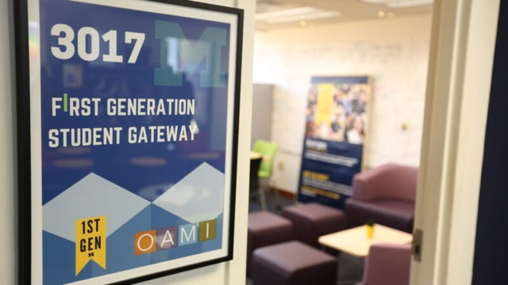
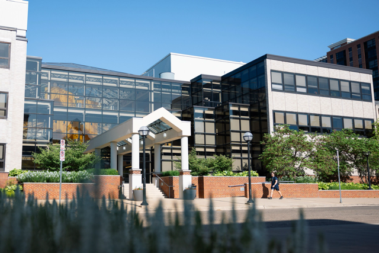

History
The First-Generation Student Program is grounded in a history of student activism. First-Generation College Students @UM, a student organization, was founded in 2007 with the mission to increase accessibility to resources for first-generation students and to build community among the population. The students advocated for greater campus support for themselves and other peer first-generation students. In 2017, University of Michigan hired the inaugural first First-Generation Program Manager, established the First-Generation Gateway Office, and launched multiple initiatives to increase first-generation student success. As a result, student engagement has increased significantly since 2017 and University of Michigan’s first-generation efforts have received national recognition.
Defining "First-Generation College Student" at the University of Michigan
At the University of Michigan, we define first-generation college students as individuals whose parents or guardians have not attained a four-year college degree. This inclusive definition applies to both undergraduate and graduate students. While the University of Michigan adheres to this definition, all signature events organized by the University of Michigan’s First-Generation Student Gateway are accessible to any student who believes these resources could benefit them.
First-Generation Gateway
The First Generation Student Gateway serves as a starting point to get connected to resources for first-generation students. Housed in the Office of Academic Multicultural Initiatives (OAMI), the Gateway is linked to several partner offices and is a home for support for first-generation students. The Gateway is for all first-generation undergraduate and graduate students and their allies. The Gateway is open during regular business hours (8AM-5PM).
This space can be used for:
- Finding resources for first-generation students
- Connecting to partner offices that support first-generation students
- Study Space
- Meeting Space
- Meet with First Generation Project Manager
First-Generation Program Partners
First-Generation Student Gateway collaborates with several offices across campus to provide resources and support to first-generation students.
These offices include:
- Comprehensive Studies Program
- Multi-Ethnic Student Affairs
- Office of Academic Multicultural Initiatives
- Office of New Student Programs
Location & Contact
Located at the Student Activities Building on the third floor
- Address: 3009 Student Activities Building, 515 E. Jefferson St., Ann Arbor, MI 48109
- Phone: 734-764-9310
- E-mail: firstgeninfo@umich.edu